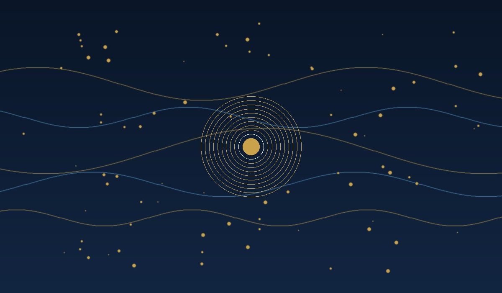
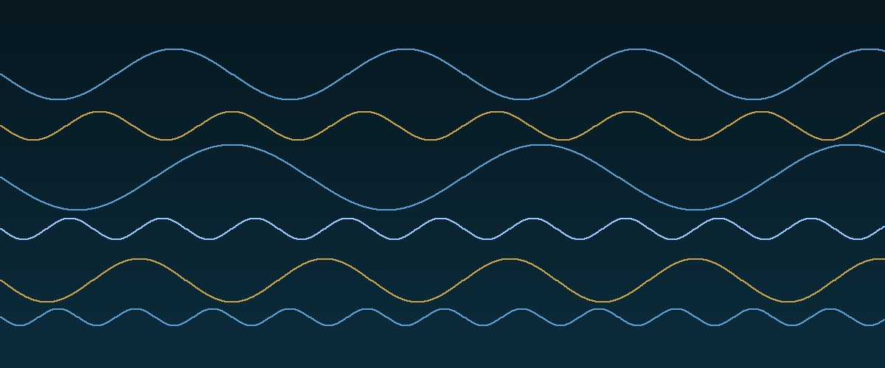
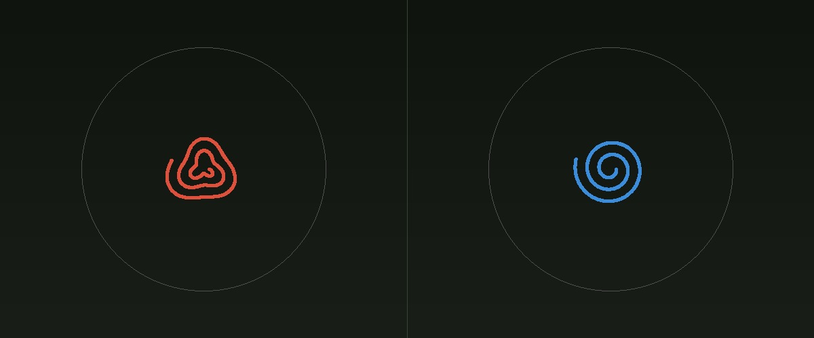
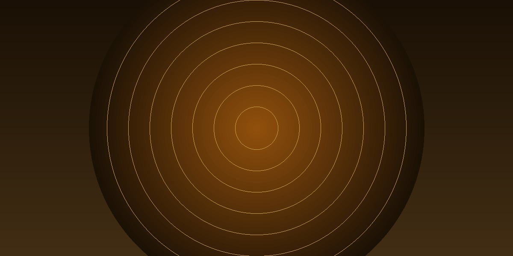

P21 builds an 11-engine consensus board that reads Parkinson's disease from three non-invasive signal streams — voice tremor, spiral drawing irregularity, and postural assessment — achieving AUC 0.846 on 195 clinical subjects, then packages every algorithm and clinical rationale into a 97-page companion textbook designed for the clinician who needs to understand, not just use, the system.

Parkinson's disease affects more than ten million people worldwide, yet by the time most patients receive a formal diagnosis, motor symptoms have been present for years. The disease is diagnosed clinically — there is no blood test, no imaging biomarker with sufficient sensitivity, no simple yes/no. A neurologist observes tremor, rigidity, bradykinesia, and postural instability, weighs them against exclusion criteria, and makes a judgment call. In a busy clinic, that judgment call takes minutes. In underserved settings, it may not happen at all.
P21 asks a different question: can an inexpensive, non-invasive signal — a sustained vowel, a pen on paper, a few seconds of standing still — carry enough information to flag Parkinson's disease before the clinical threshold is crossed? The answer, across 195 subjects and 11 engines, is a measured yes.


The combined dataset draws from established clinical collections: 147 subjects confirmed with Parkinson's disease and 48 healthy controls. The 3:1 imbalance reflects the recruitment reality of PD research — patients are more accessible through movement disorder clinics than age-matched healthy volunteers — but it also mirrors the clinical setting where the cost of a missed PD case vastly exceeds the cost of an unnecessary follow-up referral.
This imbalance shapes every modelling decision: class weighting, threshold tuning, and the choice to weight recall alongside AUC rather than maximising accuracy, which a naive classifier would do by flagging every subject as PD.
P21 does not put one algorithm in front of a clinician. It runs eleven engines in parallel — each trained on the same features, each bringing a different inductive bias — and builds a consensus that is more robust than any single model. The architecture acknowledges that no engine is infallible: an ensemble that disagrees on an edge case is more informative than a single confident wrong answer.
Engines range from interpretable linear classifiers (which a clinician can inspect feature by feature) through kernel methods that exploit non-linear feature interactions to tree ensembles that implicitly perform feature selection. The consensus board assigns production weights based on cross-validated AUC, not accuracy, because Parkinson's screening prioritises catching the disease over minimising total classification error.
Most ML clinical tools ship as a black box: the clinician presses a button and receives a risk score. P21 refuses that model. The 97-page companion textbook that accompanies the system traces every feature from its physical origin — the biomechanics of Parkinsonian tremor, the acoustic physics of vocal fold irregularity, the neurology of postural control degradation — through the feature extraction code, through the training procedure, and into the output the clinician sees.
The goal is clinical adoption through comprehension. A neurologist who understands why a spiral tilt feature correlates with disease severity can integrate that feature into their own assessment, challenge the model when the clinical picture contradicts it, and trust the system when it flags a subtle case they might otherwise dismiss. Augmentation, not replacement.

P21 is designed as a triage and flagging system, not a diagnostic arbiter. The system presents its output in a four-band traffic light — Green (low signal), Yellow (flag for observation), Amber (recommend assessment), Red (prioritise specialist review) — because a binary diagnosis from an algorithm is neither clinically appropriate nor legally defensible for a condition as nuanced as Parkinson's disease.
What the system can do, and does, is reduce the gap between early symptom onset and first clinical assessment. A community health worker running P21 on a tablet can flag a patient months or years before the motor signs become unmistakable to a non-specialist. That gap is where treatment intervention is most effective: the earlier the dopaminergic support begins, the slower the trajectory of decline.
AUC 0.846 on 195 subjects is a meaningful result for a research-grade system. It is also an honest one: 195 subjects is a small cohort by clinical trial standards, and the features were extracted from controlled acquisition conditions that differ from the noise and variability of community health settings. The companion textbook says so explicitly, with a dedicated chapter on generalisability limitations, acquisition protocol requirements, and the validation study this system would need before deployment in a regulatory jurisdiction.
What P21 proves is that non-invasive acoustic and kinematic signals carry substantial diagnostic information, that an 11-engine consensus board extracts that information more reliably than any single classifier, and that the clinical companion model — where the algorithm and the textbook are developed together — is a more honest and useful way to deliver clinical AI than a black-box deployment followed by an opaque confidence score.
The open questions are the right open questions: what acquisition protocol generalises across microphone types? How does performance change on early-stage PD vs. advanced? What is the minimum viable training set for a regional deployment? These are questions for a clinical trial. P21 was built to make that trial worth running.